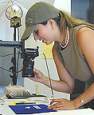
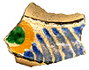

|| Mission Ceramics || CD-ROM
Project || SJB Database || Institute
Projects || Community Partners || Field
Projects || Participation Logs || Field Conditions || Lab
Projects ||
Mission Ceramics: A Virtual Type
Collection
 See
Screen Shots
See
Screen Shots
Mission Ceramics interface screen (Copyright
Ruben G. Mendoza, 2003).
Institute Director and Professor Ruben G. Mendoza undertook the development
of a multimedia or virtual type collection in historical archaeology. The
product consists of a type collection of some 50 individual Mission era
ceramic types needed for interpreting the cultural and chronological affinities
of Historical or Colonial era archaeological sites in the Greater Southwest
and California. This section provides a sampling of screen shots from the
multimedia CD-ROM produced by Professor Mendoza. For further information
on this project or on how to obtain a copy of the CD-ROM, please contact
rmendoza@redshift.com.
The Archaeology CD-ROM Project
CD-ROM
Project
Follow our progress as we move forward on the development of an archaeology
CD-ROM funded in part by the California State University Research, Scholarship,
and Creative Activity Awards competition in the Spring of 2000.
Old Mission Database Project
Old
Mission Online Database
The Institute of Archaeology was granted a $5,000.00 grant by the CSU Research
Awards Committee in the Summer of 1999 in order to work toward the development
of an online artifact database and visual archive of that material culture
retrieved in the course of recent excavations at Old Mission San Juan Bautista.
In order to review a sampling of the database, which currently consists of
some 2,012 individual specimen entries, please click on the Online Database
link above. CSUMB students or other project personnel wishing to review
the entire database should contact the database administrator at: ruben_mendoza@monterey.edu
for password access.
Institute Projects and Activities
The Institute of Archaeology is currently working on a number of lab and field
projects intended to target the larger goals of the California State University
Monterey Bay. The following Projects, Labs, and Community Partners are central
to that programming currently being promoted by the Institute. As a service
to our Community Partners, we have posted the following links and pages as a
courtesy to our current project associates.
Institute
Activities
Excavation
Schedules
Class
Schedules
Project Open House
Public Relations
Professor Mendoza's Media Archive
Community Sponsors
Community Partners
Official
Parish Site: Old Mission San Juan Bautista
Old Mission San Juan Bautista
The
Gabilan Conservation Camp
San Juan Bautista Historical Society
Field Projects
The
Alta California Mission Research Project
The
Museum Education Project
Wireless Technologies
in Archaeology Demonstration Project
Wireless Archaeology Data Entry:
PDA Interface
Archaeology
Lab and Field Forms
Map Directions
to Old San Juan Bautista
Field Class Participation Logs
Fall 2004
Spring 2003-2004
Field Conditions
Project Weather Forecast:
National Weather Service
USGS
Earthquake Hazards Program: Latest Quake Information
USGS Earthquake Hazards
Program: Real-Time Earthquake Maps
US Naval Observatory:
Sun or Moon Altitude/Azimuth Table
Lab Projects
The
Virtual Museum Projects Lab
The
Modern Material Cultures Lab
The
Ancient Technologies and Cultures Lab
archaeology_institute@csumb.edu
All Text and Photographs on this Web Site are
Copyrighted by Ruben G. Mendoza, 1998